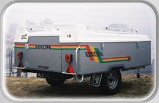
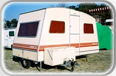

Da estrada
ao seu lugar.
Atrelados-tenda e caravanas: conheça as famílias apresentadas pela Mecinor e leve as suas dúvidas para a conversa.
Veja a mudança
de cenário.
A gama Europa é apresentada nas versões 1.4, 1.6 e 1.8. As fotografias do catálogo mostram o atrelado fechado e diferentes fases da abertura.
Sequência ilustrada a partir do arquivo da gama. Confirme com a empresa a versão, configuração e disponibilidade pretendidas.
Falar sobre o Europa
O que vale
a pena perguntar.
As opções publicadas pela Mecinor ajudam a preparar uma escolha mais informada. A aplicação ao modelo deve ser confirmada pela equipa.
Toldo e espaço de apoio
A Mecinor apresenta uma opção de toldo para o atrelado-tenda. Pergunte pela configuração adequada à utilização que pretende.
Quarto suplementar ou arrumos
O catálogo apresenta uma opção de quarto suplementar ou espaço de arrumação. Confirme a compatibilidade com a versão escolhida.
Arrumação do equipamento
Antes de decidir, indique o espaço de que dispõe para guardar o atrelado e esclareça as condições de preparação e arrumação.
Mais caminhos
para explorar.
O catálogo publicado inclui os atrelados-tenda Campo, Messager e Lezíria, além da família Europa. A empresa apresenta também caravanas e modelos de rebaixar.
Fale com a Mecinor para conhecer a oferta disponível e esclarecer o que se adapta ao seu uso.
Informações sobre caravanas
Disponibilidade sujeita a confirmação.